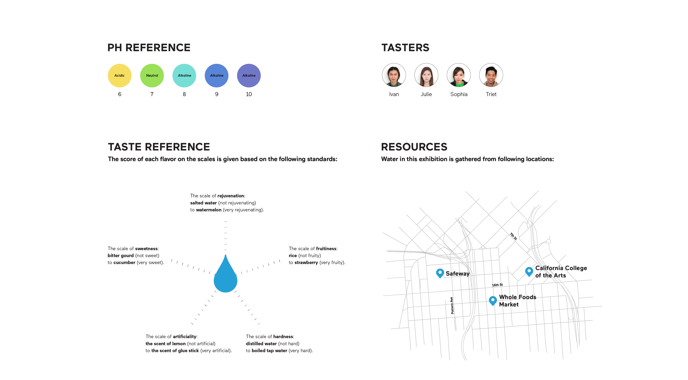
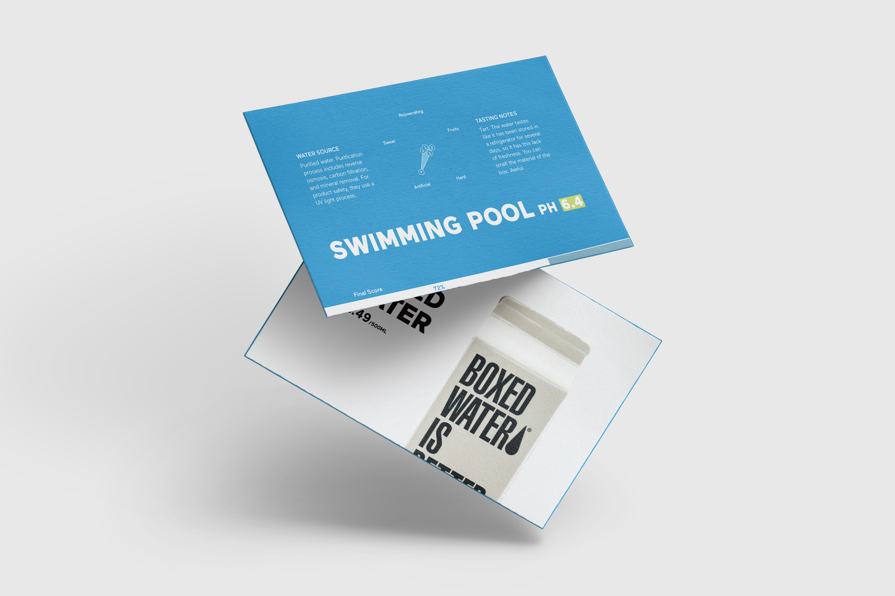
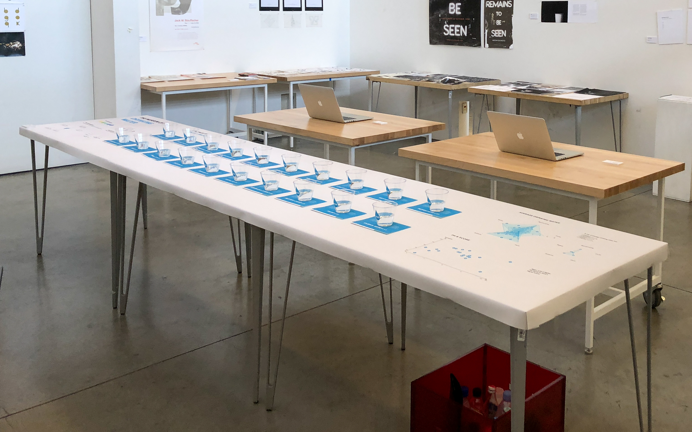
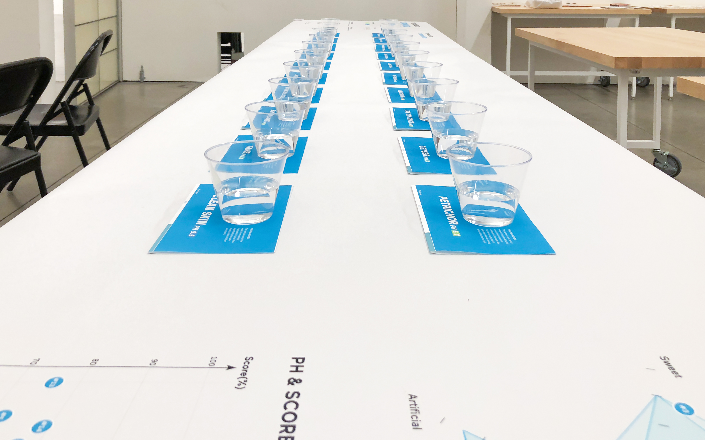

PROJECT: THE MUSEUM OF DRINKING WATER
The Museum of Drinking Water
Exhibition | 2017 | College Project
This project is to visualize the invisible. Water is invisible, and it is supposed to taste nothing, but because of all sorts of reasons, the water we drink everyday, bottled water or tap water, have their unique taste. Hence, in this project, I did taste test on 20 different water from various sources.
Exhibition





On the front of the cards, I have the analysis on the water (their source, taste, PH, and final score). I also rename the water based on their taste. On the back of the cards, I reveal where the water is from.